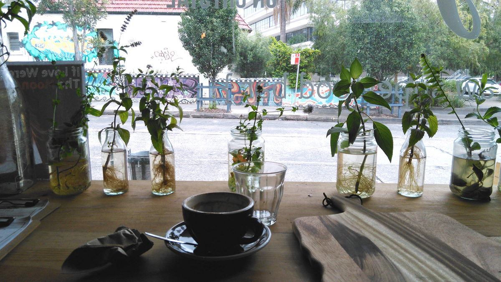

Zen-moments in a quiet cafe
Last Saturday I had a meeting in Leichhardt and on my way back home I came across a quiet little cafe called Organica – a raw food cafe* in Petersham. I could see that it was empty from outside but with the confirmation of high ratings in google maps, I went inside and ordered a wrap and a coffee.
I sat on the window bar on a high wooden stool and enjoyed my raw (ie. untoasted) wrap and organic coffee. I looked outside through plants (what seems like weed) in glasses of water listening to the rain - I felt so serene.
I think these are the zen-moment that we look for in our busy lives. Moments where we hide and nestle in a small quiet space with noone bombarding you to buy or understand something. Don’t you think?
- Raw foodism is the dietary practice of eating only uncooked, unprocessed foods. (Wikipedia)